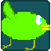

Software
 ~TilePlat
~TilePlat- Tilemap platformer ~Last updated May 28 25~
~Lulzmaku
- A bullet hell game made in JavaScript. ~Last updated Dec 27 24~
- ~Breakout
- A Breakout clone made in C with raylib. ~Last updated Oct 8 24~
~2d platformer prototype
- A small 2d platformer prototype. ~Last updated Mar 23 24~
- ~20 balloons in 20 seconds
- A small collect the items game made for the 20 second game jam. ~Last updated Apr 24 24~
- ~Avoid(working title)
- A cutesy retro style shoot 'em up game. ~Last updated Nov 25 22~